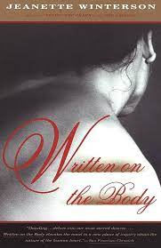

Media baby
Welcome to my media consumption
I've been trying to branch out and read more mf books n stuff. and also watch tv
that is not Glee (although I'm still watching glee)
Sexing the Cherry by Jeanette Winterson (2.10.26)
I certainly did read this. It has been read. Jeanette my queen please don’t do this to me again. I am not even sure what to say here. I liked the last quarter of the book. I read a lot of pages to get there though. It was fine. The book just isn’t what I love about queen Jeanette. Oh well. The gender and time of it all was certainly interesting, but not as profound as I am accustomed to from my lovely fave. It is okay. It is good practice reading and finishing books you don’t love love love.
The Heaven and Earth Grocery Store by James McBride (2.7.26)
I feel like I only ever read books I think are very good. This book was absolutely no exception. I literally would talk about this book as though it was a TV show. I would stop my roommate and say “here’s what is happening in my book”. This book wasn’t really a mystery although it opens with a dead body, but the unraveling was sooo good. A bunch of threads all being woven together in such an interesting way. I don’t think I even totally understand some small parts of how the book came together. I also figured out who the dead body would be early enough, but it was still really satisfying to read how the body ended up there, that part was a twist.
A friend asked me if this book was sad. And obviously it is sad, but it also just felt really real. I was so invested in all the characters and there was enough exposition while also having a compelling plot that moved it forward. I honestly am discovering plot and not just prose can make me really enjoy a book. I loved Chona (of course) and Addie and Paper omg. Wow these were really interesting characters that had the perfect amount of development. I think the little sort of bit at the end about America was a little preachy, but overall book was so good and exposed really interesting themes without ever being toooooo obvious. I loved the idea of Moshe wanting to be American and Chona being like fuck you no I love Chicken Hill. Overall, this book was quite good and I was very into it
Sunrise on the Reaping by Suzanne Collins (1.28.26)
Lily was annoying as F, but in the end super right. This book was FAB. Suzanne Collins the woman you are. I loved Ballad of Songbirds and Snakes, but this was fantastic. She is such a good writer of these books. I lowkey ravAGED this book. I read it before bed and was feeling insane needing to read every page every word!!! And then I realized reading is a crazy thing we do with our brains. It is so awesome. And that we get to talk about with our friends and get to feel enraptured by a story!!! Lily and I disagreed about how we said Panache’s name in our head and I am just like wow ugh reading is so fun!!!! And not pretending to be profound, but just that this book was awesome because it was great YA and really invigorated reading for me.
One Aladdin Two Lamps by Jeanette Winterson (1.12.26)
I relapsed. Another Jeanette Winterson…. And this one was honestly not my favorite (annoying). I’m gonna cleanse my palette by reading some of her for real literature. This book is a partial retelling of A Thousand and One Nights and part her social commentary on the world, feminism, the importance of imagination and, importantly, literature. It is great that I have read now two books in the calendar year of 2026 wahooooo. I think my main gripe with this book is that it was white woman of her. The disjointed nature came together in the end which was really beautiful. However, the fact that she (and she does this in 12 bytes too) sort of relentless addresses women as a group of people and just never does any real work to address women of color. Sure it is an offshoot here and there and the woman at the center of Nights is middle eastern? But I just think it is very white woman to be obsessed with woman as a class. Not that analysis cannot be astute and group all women together, but also can it? I could absolutely not do what Winterson does in the way her mind works, but I’d also want to read this brilliantly written book with literally ANY analysis on race… oh well! As usual, Winterson has some bangers… I will put them here for my own memory and for the culture (who reads my book reviews besides me?? Idk )
“I am sure people are addicted to falling in love because it’s one of the scant times when we really do look and look and look. All our effort goes into learning the lineaments of that face. Waking or sleeping, our beloved is our new-found land. Every rustle and curve, every bend and mound, must be mapped. The heightened sensory perception that comes with falling in love is liberating. We believe that it will always be this way – the smell of rain, the sound of footsteps, the startling colour of that doorway, while I wait for you to come out, the touch of you that turns hand-holding into braille. Water in the shower we share, each drop falling like a yod of fire. Am I cleaned or burned? Long-sighted suddenly I spot you in a crowd of others. Nothing is vague, nothing is blurred. I am alive. (Author’s note. Yod is the 10th letter of the Hebrew alphabet, It is also the Finger of God).
The bluntness, the blurriness, of life need not be our usual state. We can’t solve it by falling in love all the time- but we can use art to rouse us” (195, Trel note: she ATE ME UP WITH THIS HOLY COW)
“Our marvelous world is not everything. Look further. It seems there are other worlds, and ones that violate the second law of thermodynamics. Worlds where there is no struggle against entropy.
Worlds where suffering is not the stamp of the human condition. Perhaps, after all there is such a thing as perfect love. Perhaps love is a place” (233)
The Emperor of Gladness by Ocean Vuong
Wow… okay Ocean Vuong is very good!! Many are saying this but it is very true!! I was really invested with Hai (main character) from the beginning of the book and I’ve already been feeling sad in my day to day about the opioid/ addiction crisis in America,,,,, this was really just intensifying that… I honestly liked it better than On Earth We’re Briefly Gorgeous. Both very devastating, but I think that this book wove in so much to it that I felt really enveloped by the book and its perspective/ message Maybe I should reread On Earth We’re Briefly Gorgeous…. Some people on reddit didn’t like the Sgt. pepper stories, but I actually thought they were really important and so interesting… something about the throughline of memory in the book. Also,,, sometimes I find a little bit of Vuong’s prose a bit… much and I think this book did less of that so huge!! Ugh someone talk to me about the ending pLEASE.
Stoner by John Williams
This book was described by my colleague as “watching a car wreck happen really really slowly”. I found that really accurately. What a painfully beautiful book. I got this book from my Grandma and it took me truly so long to read this. Sometimes because I was so busy, other times because I really couldn’t handle the book. I kept waiting for something good to happen to Stoner which was probably extremely naive. I read this a while ago so don’t have a ton to say about it. But I just wanted to prove that I still have literacy skills.
Shuggie Bain by Douglas Stuart
This book was devastating and really good. It was the only book I read start to finish this summer which was a huge freaking bummer. I did really like this book because it was well written and felt so real and honest. It is also my kind of book where it’s very realistic and grounded in liek human emotion and storytelling rather than relying on other elements. IDK How much else to say besides wow it is crazy how life can be and how people can paint pictures of life that make you feel so deep in 1980s working class Scotland
Last Night at the Telegraph Club by Malinda Lo
This was so YA but… it was really good and I liked the story and it made me realize reading can be awesome and quick. I think I often fall into this rut of like unless its super profound,,, getting bored with reading. But this was a reminder that reading can be sort of awesome in a fun and plot driven way. Sometimes reading for a story is great and awesome. Also!!! This was lesbian and interesting and I liked the stories and characters and it was like not short but the read felt short. I read it so fast and it didn’t feel like a ton of development happened. Like obviously the main character, Lily, has a lot of growth in the story, but it felt like yeah okay! This is happening and it all makes sense. Very few like plot twists or even really anything slightly like that. Found the story compelling and should read more plot driven books!
12 Bytes by Jeanette Winterson
Ugh this was lowkey devastating because I love my girl Jeanette…. BUT I really did disagree with a lot of her takes about AI. However, I still really enjoyed this read because it was the kind of book I could send pictures of passages to friends and be like this!!! This is !! thought provoking!!! That is really important I think. The way that she weaves in history of development into her analysis of where AI has been and where AI is going is soo interesting. I think that she makes interesting points about AI’s connection to the past, although I vehemently disagree with the sort of moral weight she assigns to AI AND how she frames where she thinks it is going and where it should. I really am kind of disappointed because I feel like I have relied on Winterson to sort of make my big human emotions and experiences feel validated (Sorry I love love), but this made me feel icky about her takes on like the human experience idk how to put it.
Frankenstein by Mary Shelley
I FINALLY read and finished Frankenstein. It only took me about a semester. Oops! Sorry! I really enjoyed this book and also I enjoyed how little I knew about it before. Story within story within story. I get why Jenaette Winterson obsessed with this book. Thinking about the bounds of creation and conscious… thinking about the human experience… thinking about grief and love…. IDK. I don’t have a lot to say because I am fearful of sounding dumb… so anyway … glad I finished this and glad to have read a classic.
Frankissstein by Jeanette Winterson
Okay this was an audiobook so does it really count as a Winterson?? Mayhaps… This one wasn’t my favorite because maybe it went over my head. But it certainly made me think. Such an interesting concept. I don’t really like thinking about transness in the similar realm to artificial intelligence and the creation of sex bots. I honestly felt like it was hard for me to get behind the description of transness as something that is similar to the drive of AI (to make a better human). Also, the way that the Ry Shelley views themselves as both genders in some aspects. I guess maybe I just kept feeling like I had to justify myself in comparison to this book and the characters described. I am curious to read the other winterson book that’s just about AI because it really does fascinate me to think about this in the context of the human experience.
Gut Symmetries by Jeanette Winterson
Okay guys I’m sorry I literally can’t read anything but Jeanette right now. It’s not my fault! I really did like this one, even though it felt so very corny. I’ll defend her until the day I DIE. This one was all about time and space and the realities that we live in as constructed by the knowledge we have. It felt like maybe it would be a weird love story, but it was actually just more beautiful prose and the way she writes just gets to me. It is so beautiful, thoughtful, and idk !! I need to break free of the shackles she has on me (I won’t). “The probability of separate worlds meeting is very small. The lure of it is immense. We send starships. We fall in love” (25). This quote really does sum up a lot of the book for me, like what are the odds of existing? What does existing even mean? And what does love mean in the face of it? Such beautiful things to think about. Daunting a little too.
Night Side of the River: Ghost Stories by Jeanette Winterson
Okay blog another Jeanette Winterson and expect more to come
(I have like 3 of hers on my to-read list). I really really liked
the stories that dealt with grief. Some of the stories were most
like traditional ghost stories and I don’t honestly love them.
Which is fine. I understand their point in the collection. The
No Ghost Ghost Story really made me think about grief and ghosts in
just such a beautiful way. Time, grief, love, death, spirituality,
all things to really really think about. I think some people in my
life would really love this book. Let me know if you want to read my copy!
“Where does the time go when we are done with it?”
Nosferatu (2024)
I did not love this movie. I screamed in the movie theater. I am not built for body gore or horror or anything adjacent. Ugh I wish I had more thoughts about this except that it was not as freaky as I was told it was going to be, I was scared. I thought it was well done. I was riveted. I was on the edge of my seat. Whatever. I think I’m just too much of a baby to handle this movie.
Stone Butch Blues by Leslie Feinberg
Holy shit this was the hardest thing I’ve ever read. However, I also devoured this book. I could not put it down. I think because it felt like if I didn’t read this as fast as possible then I would go another minute without the answers,,, to well,,, maybe life? This book just devastated me… all of the pain … all of the struggle to make sense of gender and sexuality in a really hard world. In obvious ways, the story of Jess Goldberg is really really different from mine. I do not know nearly the struggle that they experienced, and a lot of that is because of timing reasons. (I was born and raised in the 21st century, famously very different from 1949). Despite this, I felt so much kinship with the character, because they are trying to make sense of being different from the norm in so many ways. To grapple with complex understandings of gender and sexuality in relation to both what is true to themselves and to the world around them is really what it's about, right? I think in some ways I went into reading this book really scared. Scared that it would validate what I have thought about myself for a long time, that I am not brave and that my proudness around my queer identity is only a result of support and the time period I was born in. And of course I realize that the conditions of my queerness are so vastly different than the narrator. However, I think what this book forced me to confront is that I am a continued legacy of all of the queer people that came before me and that existing in a way that would make them proud is brave. I also think about how as the narrator gets older the queer community changes and there is so much tension. I hope to be a part of a group of queer people that is expansive and cognizant of history and adaptive to the world’s conditions. I also recognize that maybe the conditions of the narrator could return in some ways, and I hope to channel some bravery. I’m scared of being a man without a past, but I’m also scared of being without a future. When Feinberg wrote this I lost my breath. This is so real and so hard to write about, but I just think that I am grappling with how hard it is to be just really gender queer and this book made me really confront whether I want to transition more because doing this is exhausting or because it is what i need and want. I don’t honestly have an answer. But really really thankful to this book.
Everyone Knows Your Mother Is a Witch by Rivka Galchen
Thank you to Hope for this recommendation. It took me like a month to get through because finals was a hellscape. I fear I don’t have that much to say about this book because I did just really enjoy the read. I think the elements of the testimony were interesting and cool. I love that its based on real events but fictionalized enough that Galchen changed the names of the characters. Very creative, but not that profound enough for me to gush here…
The Passion by Jeanette Winterson
GOD- i think i'm in love with a 65 year old woman's brain in such a serious way. I'm literally obsessed with
Jeanette Winterson in a deep way. Okay but anyway this particular book took me a minute to like fall in love
with because I think that she kind of buries some of the really awesome elements later in the book, which
honestly such a power move because now I’m going to re-read and i think a lot of the brilliance will come
through earlier in the book. “I’m telling you stories. Trust me” FUCKSSSSSS in the context of this book.
Hearts in a literal jar? Removed from Villanelle’s body and kept in the house of her first love. One of the
narrators ends up in mental hospital slipping from sanity as he writes. What is real? What is a story? GOD
And the fact that its historical fiction makes the book so intriguing. TBH idk that much about napoleon and
don’t reallllly care to. But I think that it being situated in this very real context with these elements of
fantasy make it just sooo intriguing. Also, I did really think it was going to be a love story between a man
and a woman, but instead it WASN’T (sorry spoiler WHATEVER). First of all, let’s gooooo bisexual woman. I love
you guys!!! Rep!!! But also I think that it actually is a really interesting that we get a description of passion
that is not necessarily rooted 100% in romance. I think that this is a great book for me to have read right now
and that’s so beautiful. Liek Henri describes how he begins to hate Napoleon. “I didn’t know what hate felt like,
not the hate that comes after love. It’s huge and desperate and it longs to be proved wrong. And every day it’s
proved right it grows to be a little bit more monstrous. If the love was passion, the hate will be obsession.”
And what is passion? Great question. “In between freezing and melting. In between love and despair. In between fear
and sex, passion is.”
“There’s no sense in loving someone you can only wake up to by chance”
“I say I’m in love with her. What does it mean? It means I review my future and past in the light of this feeling.
It is as though I wrote in a foreign language that I am suddenly able to read. Wordlessly, she explains me to myself”
Which is a crazy thing to say because this is actually unrequited love. Even he acknowledges it later saying that she
could never return it and that it showed him ‘the difference between inventing a lover and falling in love” I don’t
think he ever fell in love because that is about someone else. Inventing a lover is about you, not someone else.. (this HIT)
“You play, you win, you play, you lose. You play” and “There’s no such thing as limited victory” repeated lines that hit home when you
put them in the context of villanelles whole section about the ways that we gamble our hearts and play our
passion like a game. “Gambling is not a vice, it’s an expression of our humanness”
Last section is this quote about freedom and where to find it “My friend the priest, for all his worldliness,
found his freedom in God, and Patrick found it in a jumbled mind where goblins kept him company. Domino said
it was in the present in the moment only that you could be free, rarely, and unexpectedly”
Anyway, I love a book with religious undertones and Jeanette Winterson does it well. I love Jeanette Winterson
always tells a great story with some BANGER EFFING LINES. God more ppl need to read her and talk to meeee.
The Deeper the Water the Uglier the Fish by Katya Apekina
Thank you Georgie for recommending this book that actually is so… very much reminiscent of Boy Parts… but instead of one unreliable narrator… it's like a million unreliable characters all telling their story in a way that makes them so obviously unlikable and actually just not good people. I think it was SUCH an interesting choice to make the one actually really clearly terrible terrible character not have any narration (the Dad, Dennis). I think that Apekina did actually such a good job developing these characters and taking me on such a wild ride. I couldn’t put this book down I actually was ignoring people talking to me so I could finish the last half in one sitting. I love books that interrogate morality in a serious way especially when there isn’t anyone in the right. And this did something interesting where you couldn’t assume anyone was normal because you knew everyone’s thought process and they were all just so… WOW. it questions sympathy, it questions your own beliefs, it makes you question EVERYTHING. Also, its just kind of silly to be able to tell people actually wild plots of the book I am reading/ have read.
The Skin and Its Girl by Sarah Cypher
This book took me actually 8 million years to finish… not because it was bad necessarily, but because Swarthmore hates love and light and free time. I think that this is definitely was an interesting read. It felt a little like Cypher was trying to be really deep with the story, but kind of like the last book it wasn’t hitting exactly right. Like the paragraphs about love and connection just rung a little hollow for me. Maybe I just needed to be more invested in the characters. And I can accept that I really strung out the book so I lost some of my attachment to the emotional depth of the story. I do think it was in its own right a pretty beautiful concept, although I found myself wanting more of some of the fantastical elements. I wish that the world building was a little more clear, but maybe that’s not the point. I loved the interwoven stories and yes! I am happy to have finished a book for fun at swarthmore college and I am happy to have shared this book with my mom and that we are going to book club about it more. Maybe I will update this after our bookclub next week :)
This Is How You Lose The Time War by Max Gladstone, Amal El-Mohtar
This book was hyped up so much to me by like every book store. And I really wanted to like it. I did in fact want it to change my life. However, it did not. I liked it. I was invested I guess, but I didn’t feel as though it was the best book for me. I can totally get how this could be really perfect for someone else, but just not me. And I love corny stuff, I LOVE CORNINESS. So I’m really confused as to why I didn’t love this. I think maybe just because it wasn’t that human? Like it was talking about human stuff and making human references, but I really just love things that aren’t that fantastical. It feels hard to grab really big feelings that aren’t grounded in real reality. Not to say you should not read this book, if you like corniness and fantastical writing, sure!!! It’s probably a good intro into fantasy too, just not for me.
Why Be Happy When You Could Be Normal? By Jeanette Winterson
See,,, Jeanette Winterson the WOMAN THAT YOU ARE… I love her meanderings, her ponderings, her thoughts. This is also just a deeply moving book that definitely had me on the verge several times. It’s a memoir and gives more insight into Winterson’s life that she wrote a semi-autobiographical retelling of in Oranges Are Not the Only Fruit (a book I have read, but not reviewed here, maybe one day). I just love the way she writes, it always makes me FEEL. And I love the way she bends fact and fiction with oranges and names some of that in Why Be Happy. She first recounts her life with adopted mother, then briefly goes through adulthood and how she came to find her birth mother. She goes through her relationship with love and what it means, to her, to love. I think her musings on love always make me rethink the way I think about love. That is what Written on the Body is all about for me. Jeanette Winterson and I have led such incredibly different lives but somehow the way she writes about love just gets me. She also talks about home! How books provide a home, how literature guides her. I think this book might just inspire me to read a lot more. I LOVE HER. I love her ramblings that come to be so cohesive not through plot but creating a real sense of her. GOD.
Your Fathers, Where Are They? and the Prophets, Do They Live Forever? by Dave Eggers
OMG MORE BOOKS WITH BIBLE QUOTE TITLES. NEED. The bible has brought a lot of bad, a lot of good, but mostly some absolute BANGER lines. That’s why I picked up this book. I don’t even know the bible like that, but its got a banger title and then its a bible quote you know the book is gonna be interesting. And it really was ! Score!! The book is all dialogue so it moves quickly- finished the book in just a couple of sit down sessions (which is a WIP for me because #attention). I think similar to Seasons of Migration to the North, this book leaves me with no answers, but lots of questions. It’s one of those books where the politics are so on the nose, but then when you get into it’s does kind of make you wonder (not necessarily think, but wonder). Like why did the author do this and what does it all mean. The book doesn’t say anything new, but it does make you wonder about how to grapple with the protagonist who is saying things that make sense but going against all sensible rationale . He IS right, but kidnapping IS wrong. So what do we do with that? Does it further his points, I think a simple read of the book would say no, but really it does. He has some misses, but also he also has his finger on the pulse. What else could that do but drive you insane? I think more people should read this and talk to me about it
Seasons of Migration to the North by Tayeb Salih
I really liked this book, mostly because I enjoyed the writing of it. I thought it was super interesting. It took me a minute to get back into after I started reading it first like a year ago. The obvious themes of the impact of British colonialism and resistance (or not) were really intriguing. I think I need to reread it, because I don’t know if I was reading it as critically as I could have been. I am really interested to understand more about the dynamics of the social and local organizing of the Sudanese people. The character Mahjoub and others REALLY fascinates me, especially when he is compared and so close to Mustafa. Okay but getting too into the weeds. I think this book feels more like an interesting contemplative book rather than one that has you riveted by plot. Which is okay!!! It’s just the truth. I had to be in the right mood to think and then I could appreciate the book
Written on the Body by Jeanette Winterson
This book is quite possible and probably my favorite book that I have ever read. I love it so much because it’s like so corny and cliche but that’s kind of the whole point. I have been wanting to write down my thoughts on this book for a minute. I really appreciate this book because it honestly just made me think about love in super interesting ways. When I tell people about this book I say that I read it when I was falling in love for the first time and it resonated so deeply with me. The irrationality of love is depicted brilliantly. I think I have an affinity for hyperbolic depictions of emotions because that’s honestly how I feel. I am a dramatic mothereffer so when Winterson describes this ridiculous way of experiencing love that is all consuming, I FELT that. The book is half about falling in love and half about loss. What it feels like to grieve a partner. The first time I read it felt thrilling, to know that what I was risking was epic and intense. The second (well technically third) time I read it, I was actively experiencing this sense of loss. I think that it complicated the reading a lot. I think that Winterson plays with what it feels like to feel loss in your body. That love and loss are corporeal experiences. It hurts to love and it hurts to lose. Those are embodied sensations, ones that you often share in love and are ripped apart from during loss.I don’t want to spoil the ending too much in case you want to read it , but I think that it offers a grounding to me that intensity settles. Whether its love or whether its loss, I find comfort in this depiction that I won’t have to exist in cliches for the rest of my life. I just love the way Winterson plays with these cliches and their existence. In one way validating them and in another making it clear that the language that is classically and poetically associated with love is a little ridiculous. I don’t honestly think that this makes sense without having read the book, so you should read it and let’s talk about it!
Insecure (HBO show by Issa Rae)
I just finished this series. It was spectacular. A rare win for Trel watching good television.
I was always a little shocked by the raw sex scenes but other than that I have no notes.
I think Issa Rae does a great job of just being like yeah life is real and it can be super
awkward. Very few shows do that for me. Like I get you Issa, it’s hard and so weird.
I really appreciated that aspect of the series. When I hadn’t heard of this show but
people were talking about it, they were always talking about the love triangle at the end.
HOMIES WHAT LOVE TRIANGLE??? Like Nathan was never that serious for me. I think maybe if
I watch it again I’ll see more of Lawrence’s flaws. But honestly I don’t see themmmm.
Like yeah he’s imperfect and gets chlamydia, but I think he treated the original break up
with respect. Like yeah he’s not gonna stay after he gets cheated on. I’m soooo
anti-cheating but that’s just me. He just seems like a good guy and clearly he and
Issa have such good chemistry. And that good like could be friends too chemistry
which is more than what you can say about Nathan.
Every time Molly and Issa fought it actually made the show deeply hard to watch.
Like i love their friendship so bad. Like that’s real stuff. I love them and I was more
invested in them than I was in either of their relationships. Literally just no way.
Each of them fucked up but its like forgive and forgettttttt.
All around great great show. Would def watch again.
Bad Blood by John Carreyrou
Okay guys I just reread this for the like I don’t even know anymore. I might honestly make an Elizabeth Holmes shrine in my Things I Love tab because like. My hyperfixation when I was 18 went WILD. This book I think does such a good job of really getting inside her head. I reference the part about her wanting to be a billionaire and saying that the president would marry her because she was a billionaire when she was a little kid all the effing time. This book has deeply imprinted on my brain. Elizabeth Holmes is truly the blueprint because she just charisma’d her way to having HENRY KISSINGER (and other war criminals) be genuinely her little bitch. It’s quite obvious from the start of this book that her tech makes no sense, but she truly went on for over a decade. She fooled WALGREENS?? Like make that make sense. Fear tactics will get you a long way I guess. I truly am so glad I don’t work in tech because what if you’re working at a company that you think is gonna help millions of people but in reality you are putting people into danger etc. That honestly feels like what happens most of the time in tech. This is a whole nother world. I just am so deeply unfamiliar and I think that Carreyrou does a really good job of developing the story. Highly recommend this read.
Alien (1979)
Alien (1979): This movie is a CLASSIC (says Alex and friends). The best part of the movie was when Madeline interrupted and said that they had to edit Ripley’s bush out frame by frame. I am not that much of a hater actually, I just,, dont like gore or scary things and this movie had blood and scary things. Sooooo,,, its really not my fault. It was fun to watch a #throwback like thats cool I guess. And I think if this was 1979 and I was watching this for the first time I’d be like wow!! But I was born in 2002 and this movie was really strange to me. Also, I am so sorry but i wouldn’t go back for a cat!! Maybe that makes me a monster but if an alien was attacking my ship,, and the ship could go back to the earth and destroy EVERYONE… I simply would leave the cat!!!! But whatever. Also this movie made me realize that I do not have that curiosity gene. Like i wouldn’t do all that. It’s just not for me.
Challengers
Here are my thoughts on the movie Challengers. I LOVED this movie. To be fair I tend not to be a hater. But how could i possibly hate when it is literally zendaya and two twinks. I loved the way the movie was shot. Also, here’s the thing everyone wants me to pick a side. Art or Patrick. I can’t do that because I am Art but Patrick is awesome. Like it would be a total betrayal for me to pretend that when Art said “can you hold me tonight” i didn’t resonateeeee. Because that is me… but patrick is also just sooo intriguing. Mostly, because that is not my vibe at all. Okay also no offense but Tashi is literally so rachel berry coded. Like she’s so annoying and will do anything to get her \goal. She is obsessed with her talent and she cannot let it go. God like imagine if the laryngitis episode was real??? Like if rachel hadn’t been able to sing after. She would have been an entirely different person, Tashi… But this isn’t about Glee. this is about challengers. Good ass movie. I also thought there would be more gay sex… but maybe that tension… the edging was even better. I don’t have a lot of critical thoughts other than I am Art, Art is me… Patrick is an awesome and if he were ever a real in person in my life I’d have a fit… Tashi is really a lot… I could maybe be best friends w her, and I could date in a toxic way…